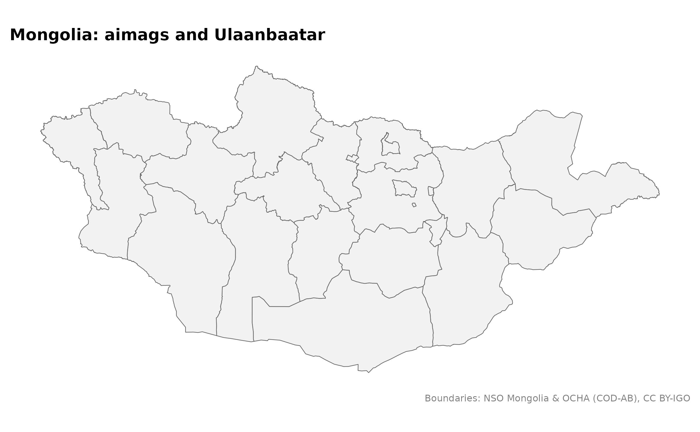
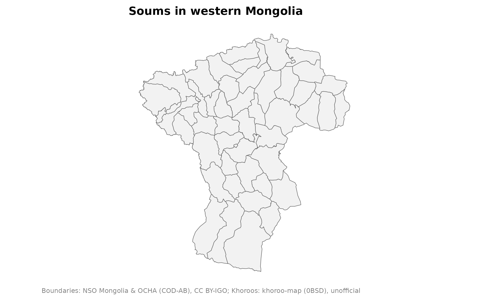
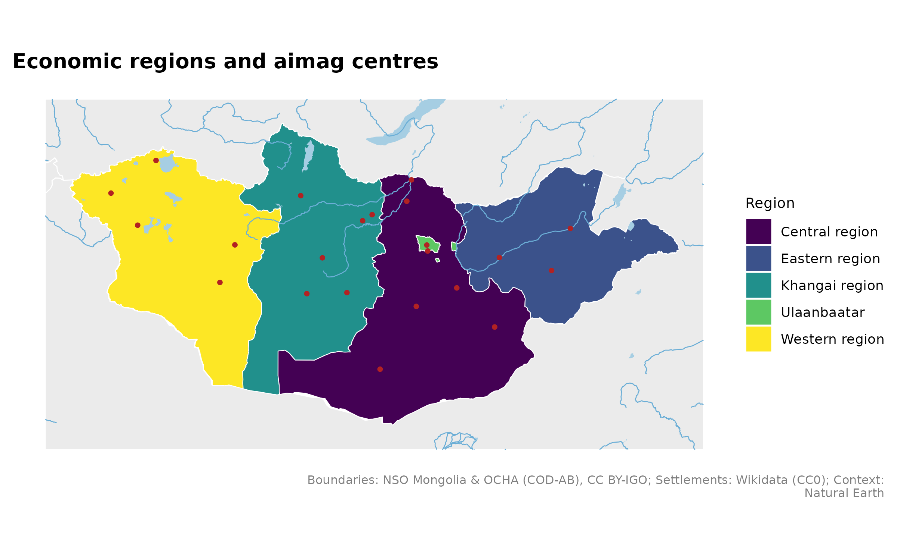

mongolmaps provides boundaries, place names and mapping helpers for Mongolia. The simplified boundaries are included in the package, so the examples below work without internet access.
Install the packages once:
install.packages(c("mongolmaps", "ggplot2"))Your first map
library(mongolmaps)
library(ggplot2)
mn_map(mn_aimags(), title = "Mongolia: aimags and Ulaanbaatar")
mn_aimags() gets the boundaries. mn_map()
draws them and returns a ggplot, which you can change with the usual
ggplot2 functions.
Choose the right boundaries
Mongolia has 21 aimags (provinces) and the capital, Ulaanbaatar. Aimags contain soums, which contain bags. Ulaanbaatar contains districts (duureg), which contain khoroos.
| What you need | Function | Included? |
|---|---|---|
| Country outline | mn_country() |
Yes |
| Four economic regions and Ulaanbaatar | mn_regions() |
Yes |
| 21 aimags and Ulaanbaatar | mn_aimags() |
Yes |
| 330 soums and 9 city districts | mn_soums() |
Yes |
| Ulaanbaatar outline | mn_ub() |
Yes |
| Nine city districts | mn_ub_districts() |
Yes |
| 204 khoroos | mn_khoroos() |
Yes, unofficial boundaries |
| Rural bags | mn_bags() |
Names and codes; supply your own boundaries |
These functions return an sf object: a table with a
geometry column that stores the shapes. Useful columns
include pcode (a unique place code), name,
nso_code, parent_pcode and
area_km2.
aimags <- mn_aimags()
knitr::kable(head(sf::st_drop_geometry(aimags)[c("name", "pcode", "nso_code")]))| name | pcode | nso_code |
|---|---|---|
| Ulaanbaatar | MN11 | 511 |
| Dornod | MN21 | 421 |
| Sukhbaatar | MN22 | 422 |
| Khentii | MN23 | 423 |
| Tuv | MN41 | 341 |
| Govisumber | MN42 | 342 |
Use name_en, name_mn or
name_mns for English, Cyrillic Mongolian or Latin Mongolian
names. Names and codes explains the
codes and spelling variants.
Show part of the country
Select places with aimag or region. Common
spelling variants work too.
west <- mn_soums(aimag = c("Khovd", "Uvs", "Bayan-Ulgii"))
mn_map(west, title = "Soums in western Mongolia")
Use mn_aimags(region = "Western") for the whole western
region. Labels are easier to read when you show one aimag at a time.
Add towns, rivers and neighbouring countries
These small background layers are included in the package.
mn_map(mn_regions(), fill = name, context = TRUE) +
geom_sf(
data = mn_settlements(type = c("capital", "aimag_centre")),
colour = "firebrick", size = 1
) +
labs(title = "Economic regions and aimag centres", fill = "Region",
caption = paste(strwrap(mn_citation(c("admin", "naturalearth", "settlements")), width = 95), collapse = "\n"))
Use Mongolian labels

Set options(mongolmaps.lang = "mn") to use Mongolian
names by default. If Cyrillic letters appear as boxes, choose a font
that supports them, for example
+ theme_mn(base_family = "Arial").
Coordinates and detail
Boundaries use longitude and latitude (EPSG:4326).
mn_map() chooses a suitable projection for display. Use
mn_aimags(crs = "albers") for national equal-area
coordinates or mn_ub(crs = "utm") for Ulaanbaatar in UTM
zone 48N.
The included shapes are simplified for fast plotting. This optional command downloads full-resolution boundaries once and saves them for later use. It needs internet access the first time.
khovd <- mn_soums(aimag = "Khovd", resolution = "high")Where to go next
- Put your data on a map.
- Map Ulaanbaatar districts and khoroos.
- Add roads, water and settlements.
- Map elevation, land cover and population grids.
mn_sources() lists providers and licences. Use
mn_citation() for credit text. Khoroo boundaries and the
district lines derived from them are unofficial; a source snapshot does
not establish their effective date.